Rollenspielprodukte
Das Schwarze Auge 5. Edition
Die 5. Edition des Schwarzen Auges stellt die seit 2015 aktuelle Regelversion des beliebten Rollenspiels dar und wurde von Ulisses Spiele entworfen. Neben Abenteuern und Kampagnen sowie den "Heldenwerken" (KurzAbenteuer, Beilage zum Aventurischen Boten) gibt es zahlreiche Regionalspielhilfen (wie Wolfsfrost und Winterwacht, an denen ich mitgeschrieben habe), die mittlerweile im Format eines regelfreien Regionalbandes, eines Mysterienbandes (Abenteuer und Geheimnisse für die SL), eines Heldenbandes (Regeln für die Spieler, Professionen usw.) und oft eines Kompendiums (Zusatzmaterial aus dem Crowdfunding) bestehen. Dazu Ingame-Bände, Kartensets usw.
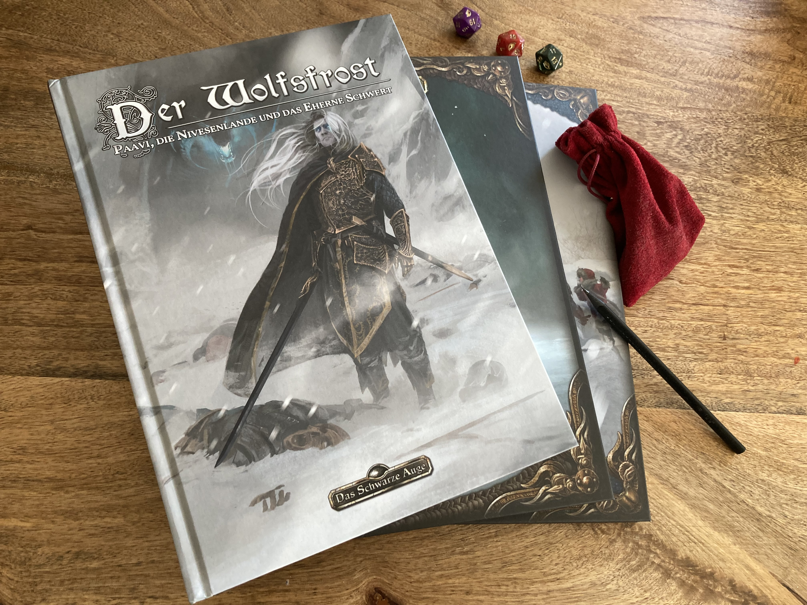
Der Wolfsfrost, redaktionell betreut vom großartigen Anton Weste, beschreibt den östlichen hohen Norden Aventuriens und setzt seinen Schwerpunkt auf ein Horror-Setting rund um Werwölfe, Vampire und andere furchterregende Wesen, darunter auch die Shakagra (Nachtalben). Für das Crowdfunding steuerte ich mit Ewige Nacht das Haupt-RegionalAbenteuer im Mysterienband bei. Außerdem stammen mehrere Texte aus dem Kompendium aus meiner Feder.

Dieses Abenteuer aus meiner Feder ist für mich ein ganz besonderer Band. Es wurde für das Crowdfunding zur Ära des Goldenen Kaisers geschrieben und ist eine umfangreiche Überarbeitung und deutliche Erweiterung des Klassikers (A1) selben Namens. Es war eine große Ehre, dieses so berühmte erste Abenteuer der A-Reihe nach heutigem Maßstab zu überarbeiten und zu erweitern.
„Die Verschwörung von Gareth ist aus meiner Sicht ein hervorragendes IntrigenAbenteuer.“ – Engors Dereblick
„Wer ErmittlungsAbenteuer mit viel Drumherum mag, sollte sich im Jahre 998 BF nach Gareth begeben und den Rummel um das Große Kaiserturnier auf sich wirken lassen.“ – Teilzeithelden


Zu mehreren der (meist thematischen) Bestiarien-Bände habe ich zahlreiche Kreaturen, Schauplätze und andere Texte beigesteuert: Untote, Feenwesen, Geister, Dämonen, Elementarwesen und andere Kreaturen. Außerdem habe ich Schauplätze und andere Texte beigesteuert.
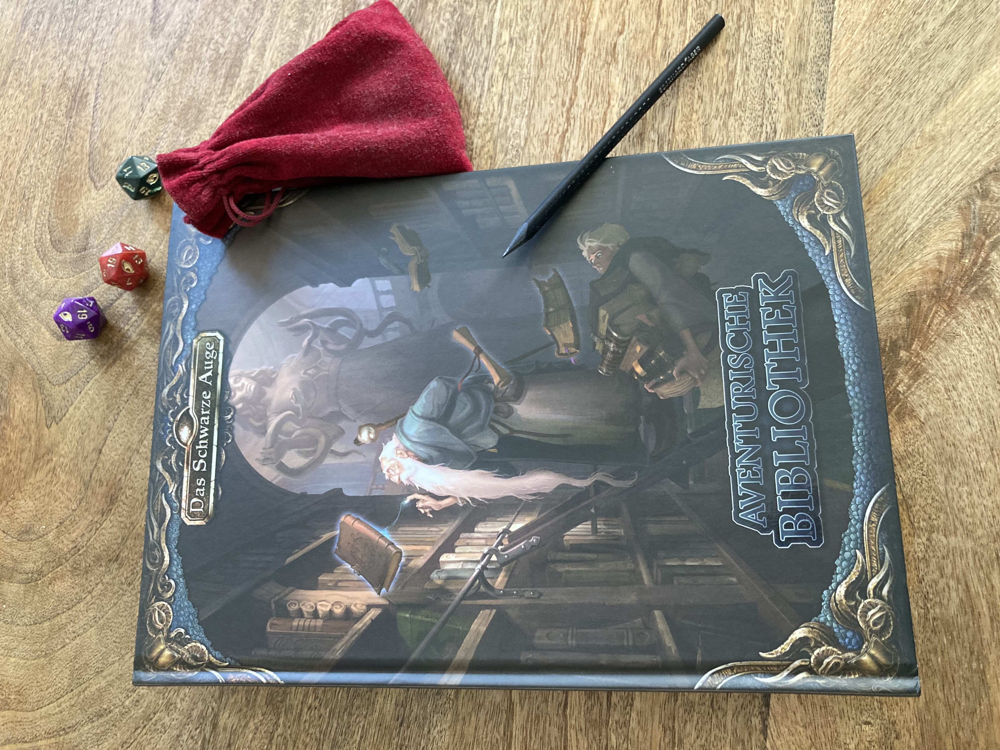
Das am leichtesten verdiente Belegexemplar meiner Schreibkarriere: Ich habe für diesen Band sage und schreibe ein einzelnes Buch beigetragen, weil es sich durch die Arbeit an der Sternenträger-Kampagne so ergeben hatte.
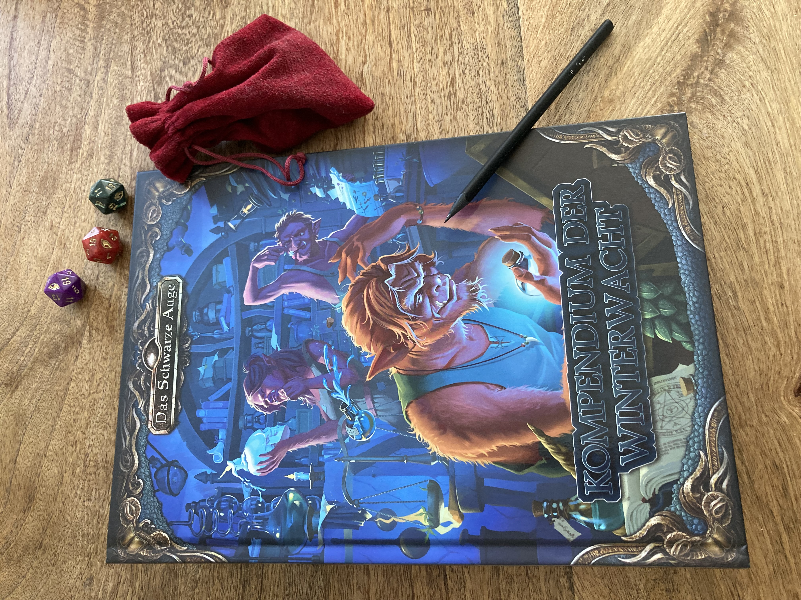
Zum Winterwacht-Crowdfunding habe ich mit Das Erbe der Tsirkevist nur einen kleinen Beitrag geleistet.
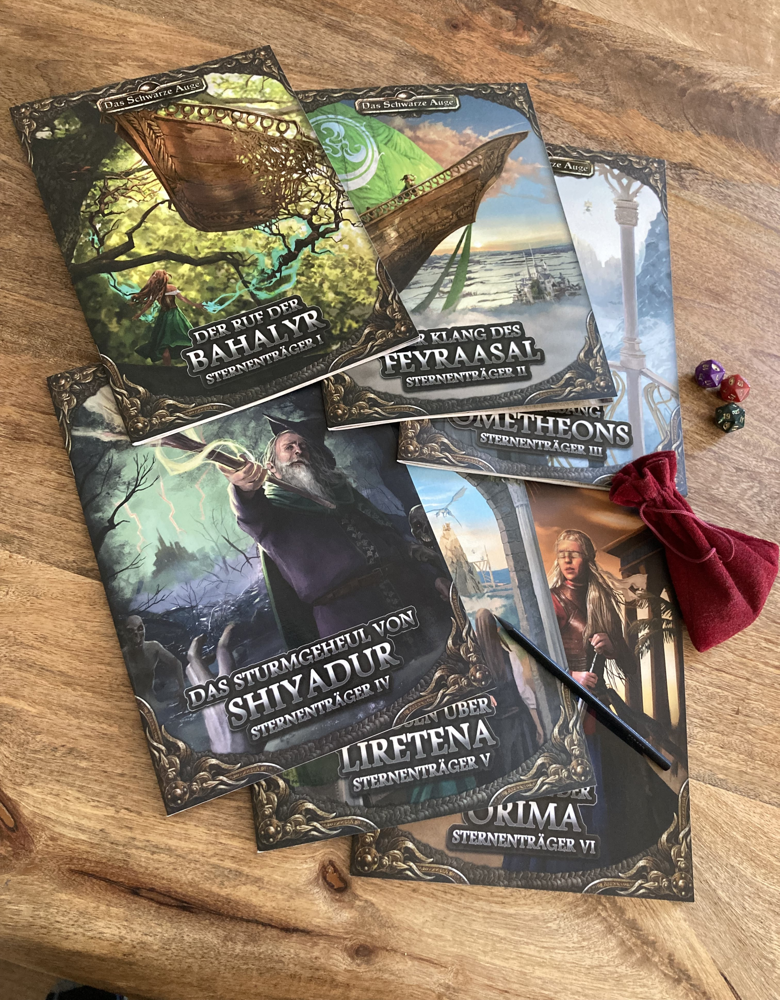
Eine epische, hauptsächlich von mir geplante Kampagne, die sich um das Schicksal einer Sternenträgerin namens Amalaia und deren Seelenlied dreht. Die Helden reisen in einem hochelfischen Flugschiff und erkunden damit Orte aus der Zeit der Hochelfen, auch in zahlreichen Traumwelt-Abschnitten. Geschrieben habe ich die Abenteuer vor allem mit dem hervorragenden Autor Rafael Knop sowie teilweise Niko Hoch, der uns auch redaktionell betreut hat.
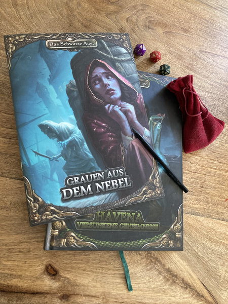
Zur ersten DSA 5 Städte-Regionalspielhilfe Havena (von Anton Weste) habe ich gemeinsam mit ihm das Abenteuer Grauen aus dem Nebel verfasst. Außerdem stammen mehrere Beiträge aus dem Meisterschirmset Seemannsgarn & Krakensilber sowie das Einsteigerabenteuer mit vorgefertigten Charakteren Auf ins Abenteuer - Havena aus meiner Feder.
"Es ist eines der besten Abenteuer, die ich bisher gelesen habe. Auf jeden fall eines der besten für DSA 5. [...] Es ist sehr gut geschrieben. Es sieht, wie immer bei DSA 5, super aus. Es tut mir Leid, ich habe nichts zu motzen." - Orkenspalter TV (über "Grauen aus dem Nebel")
"Auf ins Abenteuer – Dämmerschein verfügt über eine ausgesprochen Einsteiger-gerechte Aufmachung und ermöglicht eine schnelle und gute Spielbarkeit mit vielen Hilfen für den Spielleiter." - Engors Dereblick (über "Auf ins Abenteuer - Dämmerschein")
"Grauen aus dem Nebel inszeniert gekonnt die düster-märchenhafte Komponente Havenas und funktioniert gut als Einführung in die Stadt, beginnend mit der Anreise hin über das Ansteuern vieler wichtiger Schauplätze. Gelungen ist auch die Darstellung der typischen Atmosphäre der alten Metropole an der See" - Engors Dereblick (über "Grauen aus dem Nebel")

Zur Regionalspielhilfe Die Siebenwindküste habe ich das RegionalAbenteuer beigesteuert, das bewusst so gehalten ist, dass man beide im Band beschriebenen Regionen (Albernia und Windhag) durchreist. Es hat die Feenwelt, das albernische Rittertum und Wegelagerei im Windhag zum Thema.
"„Wächter der Feenpforte“ erfüllt viele der in der Region angerissenen Aspekte mit Leben und konkret spielbarem Material, wobei die Atmosphäre gut getroffen wird und dies mit einer gelungenen Plotidee verbunden ist." - Engors Dereblick
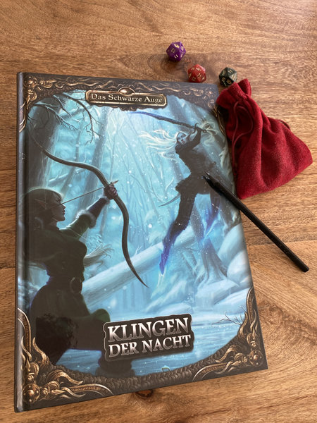
Dieses Abenteuer entstand aus der Idee heraus, dass die Shakagra (Nachtalben / Dunkelelfen) in Aventurien wenig prominent in ein oder zwei unterirdischen Städten im allerhöchsten Norden verborgen hausen und man als Held kaum Möglichkeiten für Berührungspunkte hat. Ich hielt dieses Potential für bislang verschenkt, weshalb ich die Geschichte um einen rebellischen Clan entworfen habe, der an die Oberfläche geht und in den nördlichen Siedlungen der Menschen marodiert. Ich denke, dieses Thema macht es auch so beliebt, so dass es schließlich den RPC Award 2017 in seiner Kategorie gewonnen hat.
"[...] Und ich muss tatsächlich schonmal offen sagen, dass mir relativ viel daran gefallen hat und es eines der wenigen Abenteuer ist, die ich tatsächlich auch direkt vom Stand weg gerne leiten würde. Mir hat gefallen, wie der Norden Aventuriens hier als Setting genutzt wird. [...] Der modulare Teil hat mich sehr angesprochen, weil tatsächlich jedes einzelne der Module sich auch so schon für ein kleines Abenteuer eignen. [...] An dem Punkt der mir vor allem gefallen hat: Hier passieren wirklich Dinge, und es passieren teilweise auch wirklich auch epische Dinge." - Orkenspalter TV
"„Klingen der Nacht“ ist ein hervorragendes Abenteuer, das die lange vernachlässigten Shakagra zu einem wirkungsvollen Gegner mit mehr Bewegungsfreiheit aufbaut" - Engors Dereblick
"ein gelungener Einstieg in die neue Kampagne mit einer neuen Art von Feind und Bedrohung für die Menschen." - DnD Gate
"Wer ein Abenteuer mit vielen Schauplätzen und komprimierten Informationen zu verschiedenen Themen aus DSA in einem Abenteuer möchte, ohne hierfür ein anderes Buch als das Abenteuer aufzuschlagen, ist hier genau richtig" - Nandurion
"Der Autor Dominic Hladek bietet ein spannendes und gefährliches, vor allem kampflastiges Abenteuer im eisigen Norden mit viel Unterstützung für den Spielleiter." - Ringbote
"[...] können die Helden hier einer großen Gefahr entgegentreten, die für unerfahrene Helden schlicht zu gefährlich ist. Außerdem erleben sie eine Veränderung der sonst teils starr wirkenden Spielwelt mit und stehen selbst im Mittelpunkt des Geschehens. - Sternenwanderer
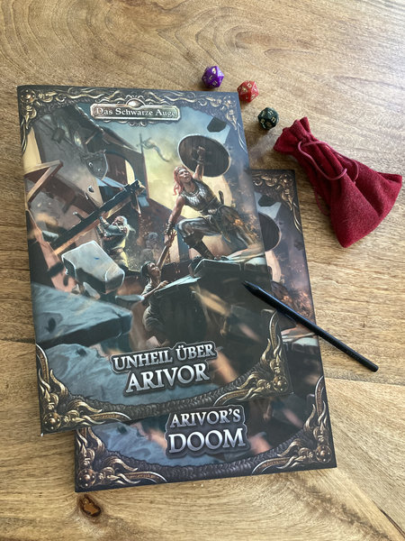
Nachdem DSA 5 eingeführt wurde, sollte es mit einem Abenteuer einen richtigen Knall geben. Diesen habe ich in Unheil über Arivor umgesetzt und diese Stadt im Horasreich dem Erdboden gleichgemacht. Die Helden erleben die Katastrophe unmittelbar mit und müssen in den Überresten der Stadt überleben. Das Abenteuer greift Flair und Tropes von Katastrophenfilmen auf. In einem PDF Der Tag danach bin ich später noch auf die Situation nach der Katastrophe eingegangen.
"„Unheil über Arivor“ ist ein sehr gelungenes und enorm spannendes Abenteuer, das die Helden relativ schnell in eine intensive Drucksituation hineinversetzt, aus der sie sich im Prinzip erst ganz am Ende befreien können und ihnen dazwischen kaum Verschnaufpausen gönnt, weil ständig irgendein neues Geschehen ihre Fähigkeiten auf die Probe stellt. Der Spielleiter erhält zudem alle notwendigen dramaturgischen und spieltechnischen Hilfsmittel, um die Atmosphäre eines echten Katastrophenszenarios glaubhaft gestalten zu können." - Engors Dereblick
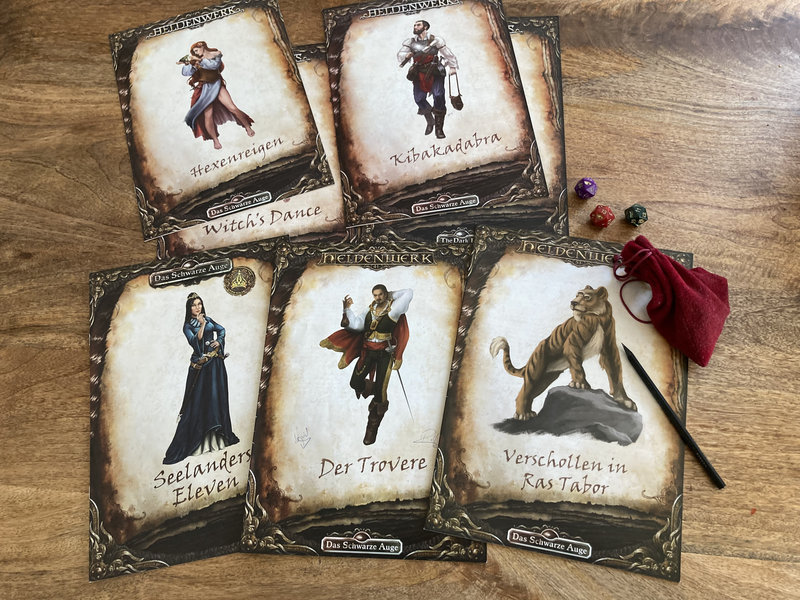
Für DSA 5 habe ich mehrere Heldenwerke (KurzAbenteuer) beigesteuert.
Hexenreigen wurde das DSA 5 EinstiegsAbenteuer und handelt von einem Hexenzirkel, der sich mit seinem Meister überworfen hat und die Helden dazu einspannt, den finsteren Hexer loszuwerden.
Kibakadabra ist ein Dungeon-Abenteuer im Inneren einer versteinerten Riesenschlange, das auf Uthuria spielt. Als Opfer oder freiwillig gelangt man ins Innere und muss wieder entkommen.
Seelanders Eleven (der Name ist ein Wortspiel, das sich sowohl auf den Heist-Film als auch wichtige NSCs im Spiel bezieht) wurde für den ersten KRK als SonderAbenteuer entworfen und kam als zusätzliches Szenario ins erste Heldenwerk-Archiv. Es spielt vor einem großen Bankett im Garether "Hotel Seelander".
Der Trovere basiert auf Verdis Oper "Der Troubadour" und spielt in Almada. Das Abenteuer wurde zusammen mit einer CD des großartigen Künstlers Ralf Kurtsiefer, der diese Oper für DSA vertont hat, ausgeliefert.
Verschollen in Ras Tabor ist eine Jubiläums-Hommage an die alten Science-Fantasy-artigen Abenteuer wie "Durch das Tor der Welten" und "Borbarads Fluch".
"Durch die Konzentration auf einen sehr gelungen gestalteten Dungeon bietet „Kibakadabra“ genau das, wofür die Heldenwerk-Reihe kreiert wurde. Es ermöglicht ein kurzweiliges und spannendes Abenteuer in einer atmosphärisch gestalteten Umgebung" - Engors Dereblick (über "Kibakadabra")
"„Hexenreigen“ stellt für mich einen gelungenen Auftakt für DSA 5 dar. Das Abenteuer ist für einen „Erstling“ bodenständig genug, dabei aber trotzdem spannend und kann zudem mit einer märchenhaften Atmosphäre punkten." - Engors Dereblick (über "Hexenreigen")
"„Seelanders Eleven“ ist ein gelungenes KurzAbenteuer, das den Helden in ihrer Ermittlerrolle eine ordentliche Herausforderung bietet, weil ihre Antagonisten auf Basis eines überwiegend gut durchdachten Plans agieren." - Engors Dereblick (über "Seelanders Eleven")
Die Schwarze Katze
Die Schwarze Katze aus dem Hause Ulisses Spiele ist ein Ableger von DSA 5 mit ähnlichen, aber eigenen, vereinfachten Regeln. Man spielt anthropomorphe Katzen (später kamen Hunde und andere Kleintiere hinzu). Neben Abenteuern gibt es Setting-Bände für verschiedene Städte wie Fasar, Donnerbach und Xorlosch. Neben dem Hauptband gibt es meist ein zusätzliches Bestiarium sowie einen Jenseits der ... Band, der das Umland der jeweiligen Stadt beschreibt. Die "Pfotenwerke" sind online-Produkte, die KurzAbenteuer und andere kleine Spielhilfen enthalten.
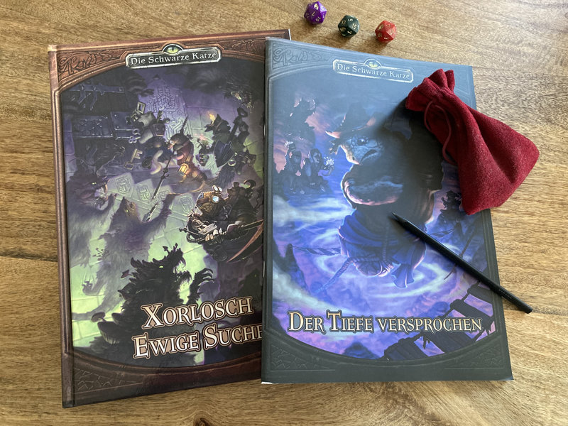
Xorlosch - Ewige Suche rückt die Zwergenstadt und die Dungeonwelt darunter in den Fokus für Die Schwarze Katze. Es werden verschiedene Echsen-Spezies neu eingeführt und es liegt ein Schwerpunkt auf Dungeoneering. Ich habe den Dungeongenerator sowie das damit konstruierte Abenteuer Schlafende Hunde weckt man nicht beigesteuert, ebenso die en der Außenposten.
"Dafür gefällt mir hier das anschauliche Beispiel für den Umgang mit dem Gewölbegenerator. [...] Hier hat man nun ein gut erläutertes Exemplar vorliegen, wobei verständlich erklärt wird, wie der Autor die Würfelergebnisse mit konkreter Handlung gefüllt hat. Das kann einer Spielleitung immens bei der Gestaltung eigener solcher Abenteuer mit dem Generator helfen." - Engors Dereblick (über "Schlafende Hunde...")
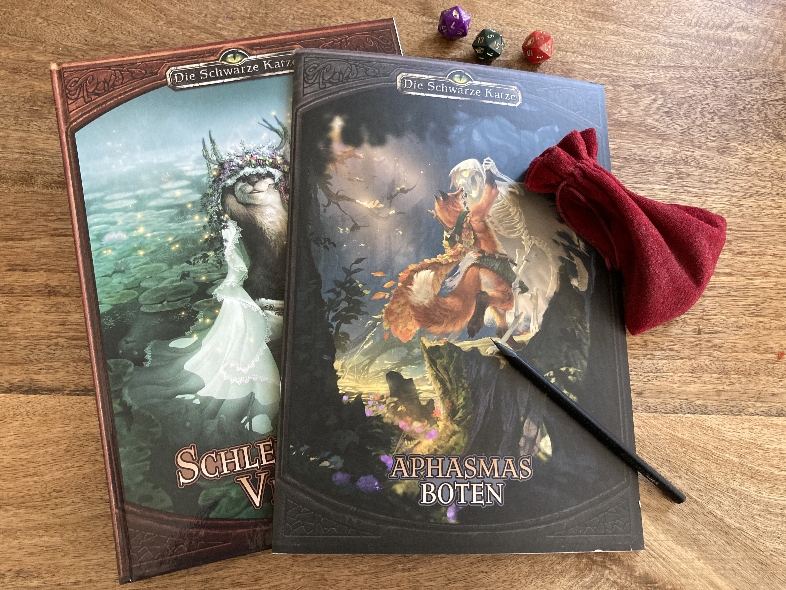
Donnerbach - Schleichender Verfall ist ein neuer Schauplatz für Die Schwarze Katze. Donnerbach und die Wildnis der Salamandersteine werden vorgestellt und mehrere Waldtier-Spezies neu eingeführt. Ich habe die Wildnis der Salamandersteine beschrieben sowie das Abenteuer Pinkle nie an einen Trollstein. Meine Haupt-Inspirationsquellen dabei waren Wieland Freunds Bücher "Wecke niemals einen Schrat!" und "Träume niemals von der Wilden Jagd" (man hört es bereits am Titel ein wenig heraus). Diese Bücher waren sicher auch mit ein Grund, weshalb die Feenhörnchen als Spezies in den Band gefunden haben.
"Der Auftakt von Pinkle nie an einen Trollstein ist an Rasanz sicherlich kaum zu überbieten, wenn man sich urplötzlich inmitten einer Katastrophe befindet. [...] Fast noch spannender als die Konfrontation mit der Urgewalt ist aber nach meiner Auffassung die Aufdeckung der wahren Hintergründe, die eine gewisse Tragik beinhalten." - Engors Dereblick
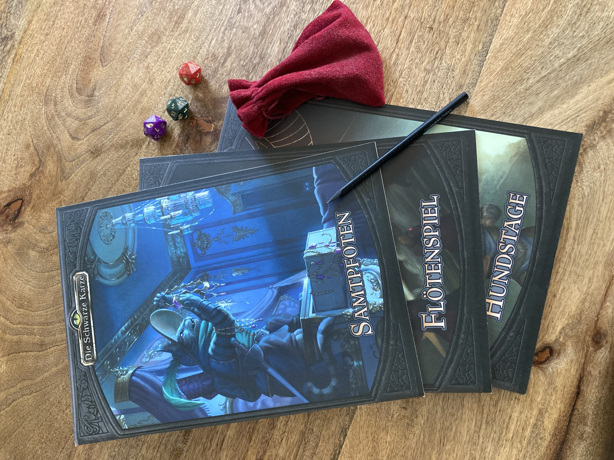
Für Die Schwarze Katze habe ich mehrere Abenteuer für Anthologien geschrieben: In Das Große Katerwerben muss man einem Bewerber um eine feine Katzendame helfen, das Herz der Geliebten zu gewinnen - und die Nebenbuhler auszustechen. Der Wandernde Hut ist ein märchenartiges Abenteuer, bei dem man der (Miss)erfolgsspur eines einzigartigen Hutes folgt, der Wünsche erfüllt. Das Maunzen aus der Gruft spielt in Fasar und endet in einem legendären Dance-Battle.
"Maunzen aus der Gruft bietet für mich die ausgefeilteste Geschichte, indem eine klare Verbindung zwischen Horisat und dem Artefakt besteht, das die Heldengruppe für sie finden soll." - Engors Dereblick (über "Das Maunzen aus der Gruft" aus Hundstage)
"Samtpfoten bietet drei thematisch gut zusammenpassende Abenteuer, die ähnliche Heldentypen ansprechen, aber thematisch durchaus abwechslungsreich gestaltet sind." - Engors Dereblick (über Samtpfoten)>
"Flötenspiel ist eine grundsätzlich gelungene Anthologie, die drei sehr abwechslungsreiche Abenteuer beinhaltet, in denen sehr unterschiedliche Fähigkeiten gefragt sind. Der märchenhafte Ton passt gut zu DSK und stellt sehr interessante Artefakte in den Mittelpunkt." - Engors Dereblick (über Flötenspiel)
Das Schwarze Auge 4. Edition
Die bis etwa 2015 aktuelle 4. Edition des Schwarzen Auges wurde zunächst von FanPro entworfen und dann zunächst von Ulisses Spiele weitergeführt, wobei der Uhrwerk Verlag den Kontinent Myranor ausgearbeitet hat. DSA 4 ist mittlerweile durch die 5. Edition abgelöst.
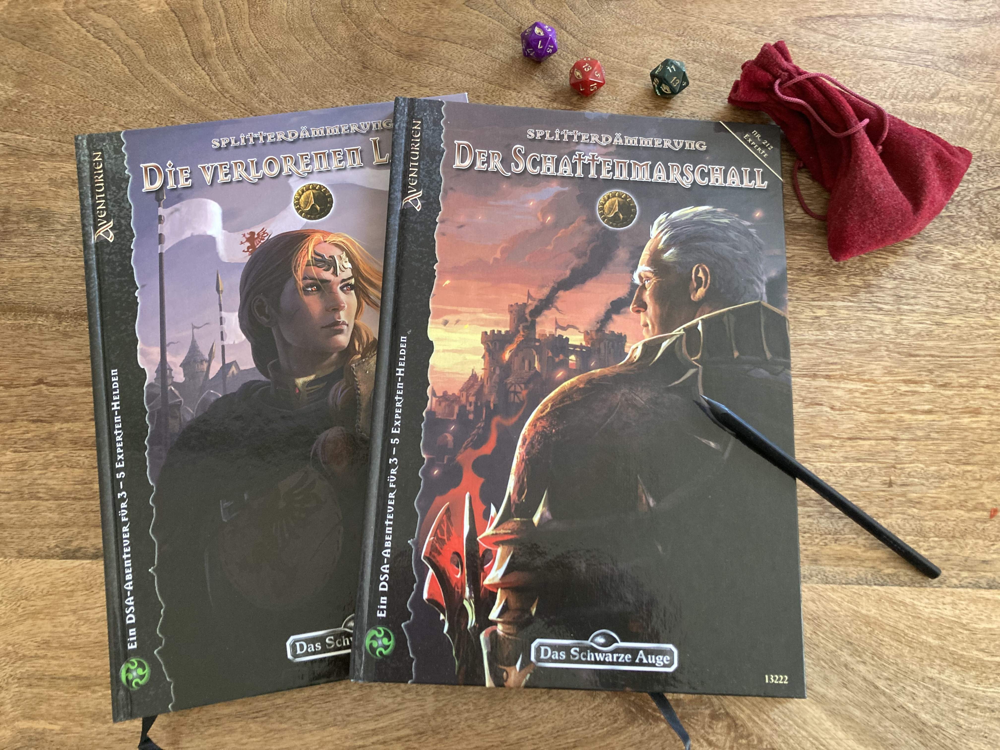
Die Splitterdämmerung ist eine lose zusammenhängende Kampagne, die aus fast schon kleinen Einzelkampagnen besteht und dadurch thematisch vereint ist, dass die nach Borbarads Invasion verbliebenen Splitter der Dämonenkrone "abgeräumt" werden und die entsprechenden Reiche zerfallen. Die letzten beiden Bände (6 und 7) handeln von der Wiedereroberung der Schwarzen Lande durch Kaiserin Rohajas Heere sowie von einem letzten Angriff des Schattenmarschalls Helme Haffax von Marasakan aus, der einen Plan verfolgt, um seine Seele zu retten.
"Der Abschlussband der Splitterdämmerung, der vom Kontext her nur mit Die verlorenen Lande eng zusammen hängt, wartet mit einer fulminanten Geschichte auf. Die Spieler müssen mit ihren Charakteren alles geben und auch der Spielleiter hat einiges zu tun um die Geschichte rund zu halten." - Neue Abenteuer (über "Der Schattenmarschall")
„Ich mag Kämpfe. Vor allem gegen epische große Dingse. Und wenn danach immer noch ein Dings kommt, was epischer, und größer und BUMMBANGDADA ist … (schwelgt in Erinnerung an den letzten erfolgreichen Hammerschlag)“ - Nandurion (über "Der Schattenmarschall")
"Dieser Kampagnenband bietet vor allem eines, was vielleicht nicht alle im Vorfeld erwartet haben bei diesem Thema: Abwechslung. So kann der Spielleiter nach Lust und Laune schauen, welcher Weg ihm am ehesten gefällt, seine Helden dann in diesen Teil des Heeres stecken und dort dann gewöhnliche und eher ungewöhnliche Abenteuer erleben lassen." - Neue Abenteuer (über "Die Verlorenen Lande")

Die Vademecum-Bände sind Ingame-Texte in kleinem, handlichen Format, die wie eine Fibel wirken sollen. Zunächst erschien für jeden der Zwölfgötter solch ein Band, mittlerweile wurden auch für verschiedene Orden, Glaubensgemeinschaften und ähnliches solche Bände veröffentlicht. Ich habe den Band des Diebes- und Händlergottes Phex geschrieben. Neben Informationen zu Halbgöttern, Gebeten usw. ist er gespickt mit zahlreichen Rätseln. Es existiert ein Lösungsdokument in PDF Form.
"So wie Phex eher im Geheimen wirkt und ein Phexgeweihter eher kleine Kräfte wirken lässt und nicht zu sehr auffallen will, verhält es sich ähnlich auch mit dem „Vademecum“: praktisch, spielnah mit vielen kleinen Hinweisen und Tipps (und knackigen Rätsel, die vom Gott selbst stammen könnten). [...]gerade das „Phex-Vademecum“ unterstützt sowohl den Spielleiter und erst recht den Spieler sehr bei der Ausgestaltung des Phex-Glaubens und ist sehr empfehlenswert." - Ringbote
"Für meinen Geschmack ist dieses Bändchen das bislang beste Exemplar der ganzen Vademecumreihe" - Nandurion
"Für Spieler von Phexgeweihten sollte dieses Buch eine Notwendigkeit sein und auch Spielleitern, die an ihrem Spieltisch das Klischee des reinen Händler-oder-Dieb-Geweihten durchbrechen wollen, lege ich diese Lektüre ans Herz. Die Gestaltungsmöglichkeiten eines individuellen Phexgeweihten mit regionalem Hintergrund sind ebenso ein Pluspunkt, wie die tollen Illustrationen." - Teilzeithelden
"Hier haben wir – im Gegensatz zum letzten Vademecum – wieder eines, welches sich vortrefflich dazu eignet von einem Phexgeweihten Spieler im PnP oder sogar LARP mit sich geführt zu werden. Die enthaltenen Texte sind (bis auf das letzte Kapitel natürlich) so gehalten, als hätte es ein Lehrer für seinen Schüler geschrieben, eben inklusive einiger Rätsel, die der junge Geweihte gefälligst irgendwann zu lösen hat. [...] st dieses Vademecum auf jeden Fall ein Gewinn für einen Phexgeweihtenspieler/ dessen Spielleiter, da viele nette Ideen enthalten sind um diesen lebendiger zu machen und durch das OT Kapitel auch sinnvolle OT Tipps gegeben werden" - Neue Abenteuer
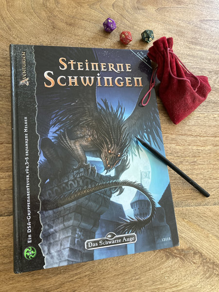
Aus der Arbeit an der Gareth-Box heraus entstand dieser Kampagnenband. Die Handlung war grob vorgezeichnet, aber als ein am Projekt beteiligter Autor fand ich es einfach zu schade, die Kampagne nur kurz umrissen in die Box zu packen. Ich habe mich deshalb des Projektes angenommen, diesen Band als voll ausgearbeitete Kampagne umzusetzen. Er spielt in Gareth und thematisiert die in der Gareth-Box eingeführten Gargyle, Schattenpfade und Nirgendgassen sowie die Geheimnisse dahinter.
"[...]halte ich „Steinerne Schwingen“ für ein ausgesprochen gelungenes Abenteuer, das als optimale Erweiterung für die Gareth- Box fungiert und deren Stärken nutzt. Gerade der abwechslungsreiche Hintergrund, der ein eher urbanes Setting mit mythischen und märchenhaften Elementen verbindet, kommt stark zur Geltung." -Engors Dereblick
"Wie immer stellt sich die Frage ob es sich um ein lohnenswertes Abenteuer handelt. Das kann man definitiv bejahen, auch wenn leider mal wieder das Finale irgendwie nicht richtig passt. Natürlich kommt es – wie bei jedem! – Abenteuer darauf an, was genau die Gruppe an Abenteuern mag. Hier wird sie absurde Rätsel, nette Anekdoten, ein bisschen Krimi, ein bisschen Dungeoncrawl und ein Feenreich vorfinden. Eigentlich für jeden etwas dabei." - Neue Abenteuer
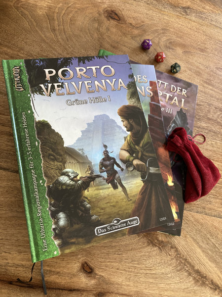
Der Südkontinent Uthuria wurde durch das Abenteuer An Fremden Gestaden erschlossen. Die Grüne Hölle Kampagne spielt vollends auf dem Südkontinent und thematisiert dortige Kulturen, allen voran die Xo'Artal, die sich an mesomaerikanischen Hochkulturen orientieren. Jeder Band enthält Regelanhänge rund um neue Aspekte des Südkontinents.
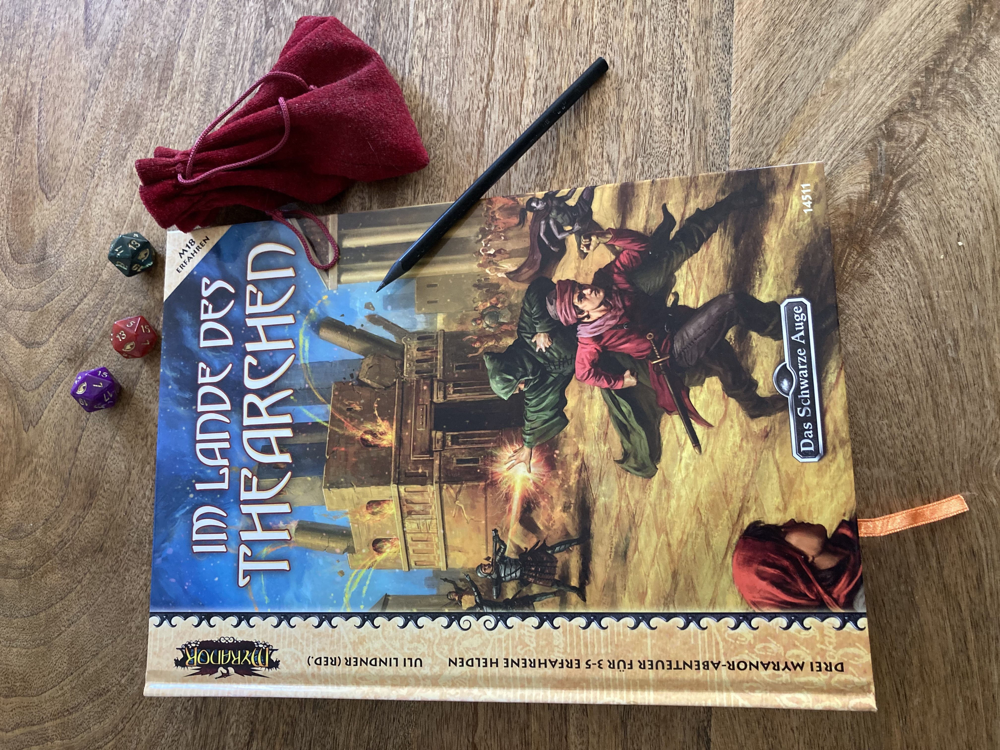
Mit dem Abenteuer Ross und Reiter habe ich mich auf meinen bislang einzigen Ausflug nach Myranor begeben. Es geht um die Reise mit einem Stamm von Zentauren und Menschen, den man eine Weile begleitet.

Diese umfangreiche Box mit mehreren Büchern und Heften darin beschreibt im großen Detail die Kaiserstadt Gareth. Ich habe dazu viele Orte und andere Texte beigetragen, aber es war ein ganzes Heer an Autorinnen und Autoren beteiligt.
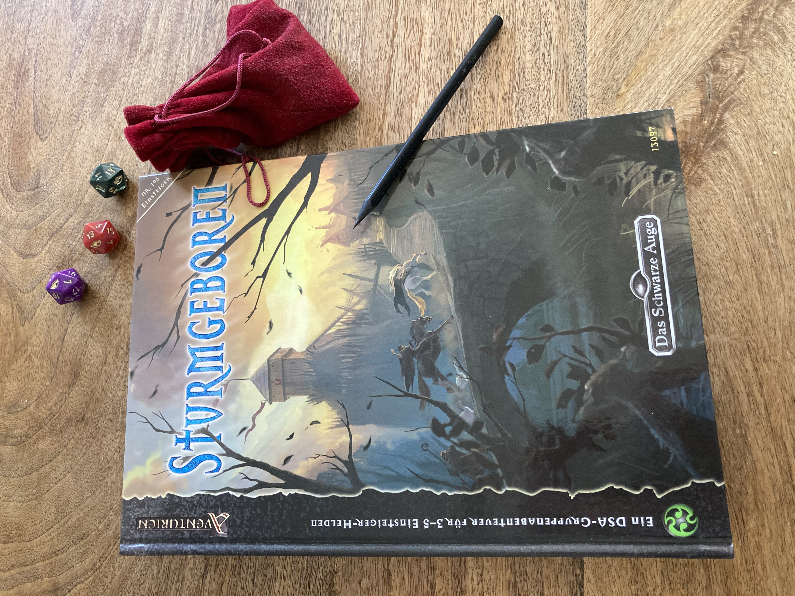
Diese kleine Kampagne dreht sich um die Besiedlung der stürmischen, fast lebensfeindlichen Hardroper Ebene vom Dominium Donnerbach aus. Sie enthält auch eine Besiedlungs-Spielhilfe, vor allem aber mehrere sich zu einer Kampagne aufbauende Szenarien, um die Ebene urbarer zu machen. Zusammen mit anderen Autorinnen und Autoren haben wir diese Kampagne geplant und umgesetzt.
"Sturmgeboren liefert auf seinen fast 180 Seiten eine Fülle von Materialien. Die Plotelemente gefallen mir dabei überraschend gut, und auch die umfangreichen Anhänge bieten einen hohen Mehrwert weit über das eigentliche Abenteuer hinaus." - Nandurion
"Letztendlich sei noch gesagt, dass das Mysterium um die Hardorper Ebene, welches quasi seit Beginn des Schwarzen Auges existiert, in der Kampagne eine angemessene Auflösung erfährt. Gruppen, die eine abwechslungsreiche Kampagne spielen möchten, in der es sowohl auf das Schwert, als auch auf Intelligenz und Geschick des Rollenspielers ankommt, sei die Kampagne ans Herz gelegt." - DnD Gate
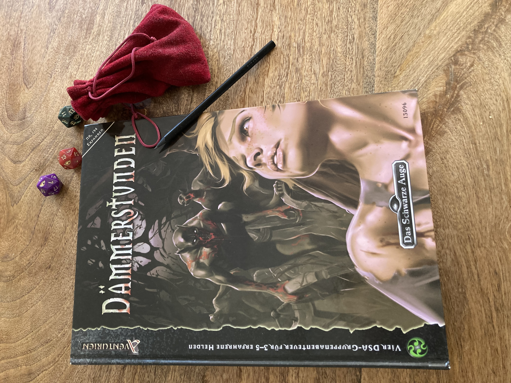
Die Anthologie Dämmerstunden unter der Bandredaktion von Martin John hat sich ganz dem Thema Horror verschrieben- Mein Beitrag Die Nacht der geifernden Mäuler spielt in einem Dorf in den ehemaligen Schwarzen Landen, die noch immer nicht gänzlich befriedet sind, und wirft die Helden in eine Art "Zombie-Apokalypse" hinein (wobei es eigentlich Ghule sind, die hier als Antagonisten auftreten). So wie schon der Name des Szenarios gibt es zahlreiche weitere Anspielungen auf Zombie-Filme, aber der Fokus bleibt auf einer frei gestaltbaren Flucht vor oder einem Kampf gegen die geifernden Horden.
"[...] enthält der Band auch zwei Perlen (Die Nacht der Geifernden Mäuler und Hinter dem Spiegel), so dass der Horrorfan bedenkenlos zugreifen kann." - Nandurion
"Wenn man einmal etwas Besonderes spielen bzw. leiten möchte, sollte man sich diesen Abenteuerband genauer ansehen. Das Horrorthema wurde gut verarbeitet, und die vier Abenteuer greifen jeweils ein klassisches Thema aus dem Genre auf." - Teilzeithelden
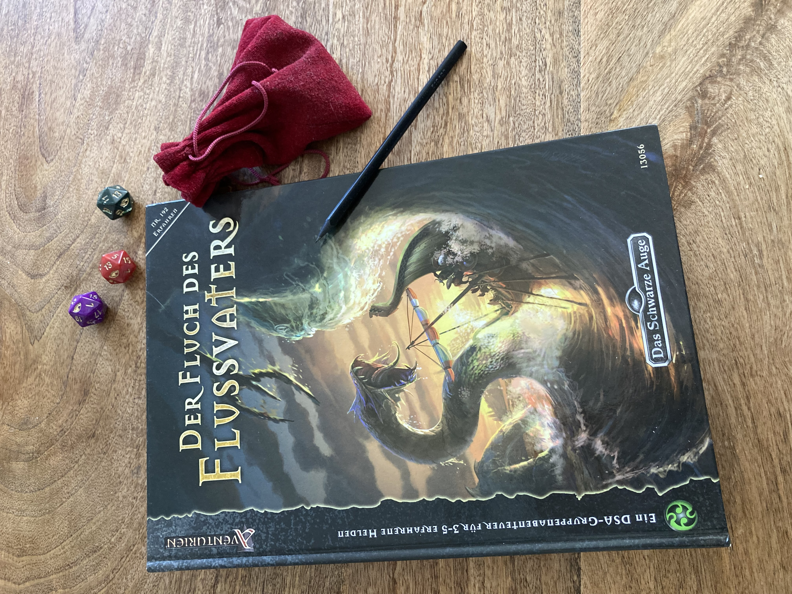
Einer meiner frühesten Aufträge. Dieses Abenteuer lag bereits als Exposé und zum Teil ausformuliert vor (Kapitel 1 und 3 in weiten Teilen), so dass wir (Matthias Kalupner (damals noch Nachname Freund) die Kapitel dazwischen, 2 und 4, geschrieben haben. Eine etwas Abenteuerliche Konstruktion, aber ich denke, das Ergebnis konnte sich sehen lassen. Im Abenteuer geht es um den namensgebenden Fluch des Flussvaters, den er einst gegen die Thorwaler bzw. eine bestimmte Kapitänin ausgesprochen hat und der bis dato verhinderte, dass die Thorwaler den Großen Fluss hinauf fahren können (um zu plündern).
Die Texte sind solide geschrieben und sehr gut strukturiert. Jedes der vier Teilkapitel ist modular aufgebaut und erlaubt den Spielern somit viele Freiheiten. [...] Insgesamt sollte der Fluch des Flussvaters für jeden Geschmack etwas bieten - Orkenspalter TV
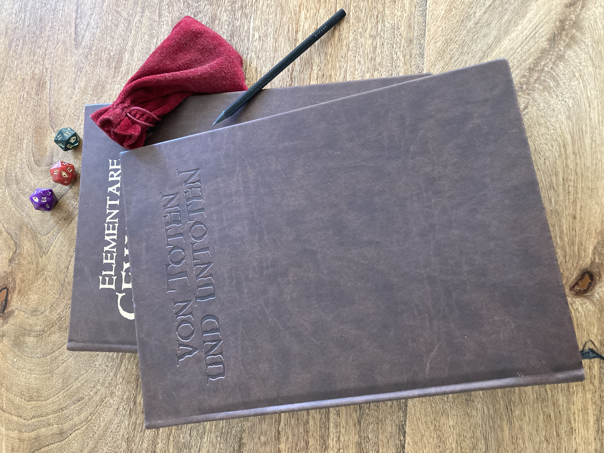
Diese beiden Ingame-Bände befassen sich mit Untoten bzw. den Elementen (und Elementarwesen). Sie sind ein Sammelsurium an thematischen Texten, die dann am Ende jeweils mit Werten unterfüttert werden. So bieten sie Wissenswertes, aber vor allem neue Kreaturen.
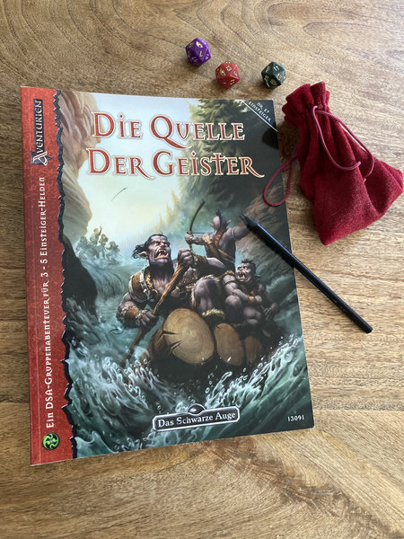
Nachdem in der Anthologie Grabräuber am Mhanadi ein erstes WettbewerbsAbenteuer veröffentlicht wurde, folgte sehr schnell die Veröffentlichung eines weiteren, älteren Werks von mir das ich zum FanPro Wettbewerb 2007 eingereicht hatte. In der Anthologie Die Quelle der Geister, redaktionell betreut von Alex Spohr, ist dieses Abenteuer zusammen mit Alex' Beitrag zum damaligen Wettbewerb (da war er noch nicht Redakteur) aus der Schublade geholt worden. Die beiden Abenteuer waren damals Platz 4 und 5 des Wettbewerbs (die ersten drei Plätze finden sich in der Anthologie Das Flüstern der Wälder. Mein Abenteuer dreht sich um Mindergeister, die seitdem als ein STeckenpferd von mir gelten (ich habe sie später in Elementare Gewalten und dann nochmals im Aventurischen Elementarium beschrieben.
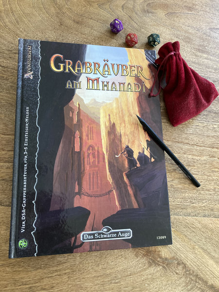
Damit fing alles an. Nachdem ich vorher schon an zahlreichen Abenteuerwettbewerben teilgenommen hatte und inoffzielle DSA-Abenteuer im Netz sowie in der Zeitschrift Envoyer veröffentlicht hatte, war der Ulisses Autorenwettbewerb von 2010 zum Thema Dungeons sozusagen mein "Durchbruch": Ziel war bewusst, neue Autoren zu finden. Mein Abenteuer erreichte den 3. Platz und wurde nach Überarbeitung in die Anthologie Grabräuber am Mhanadi aufgenommen. Es folgte auch direkt eine Einladung zu einem Autorentreffen, auf dem sich im Handumdrehen die nächsten zwei Aufträge ergaben. Im Fluch des Sultans erkunden die Helden einen unter dem Erdboden vergrabenen Teil eines Sultanspalastes, der einst ein dunkles Geheimnis hatte, hinter das sie schließlich kommen.
Cthulhu
Das Cthulhu Rollenspiel basiert auf den Werken von H.P. Lovecraft und anderen Horror-Autoren, die seinen Mythos um Die Großen Alten aufgegriffen haben. International von Chaosium verlegt, hat in Deutschland Pegasus Spiele die Lizenz, eigene Produkte wie Quellenbände, AbenteuerAnthologien und mehr zu veröffentlichen (neben Übersetzungen ausgewählter englischsprachiger Bände). An mehreren der originär deutschen Bände habe ich mitgearbeitet, kurzzeitig hatte ich auch redaktionelle Aufgaben.
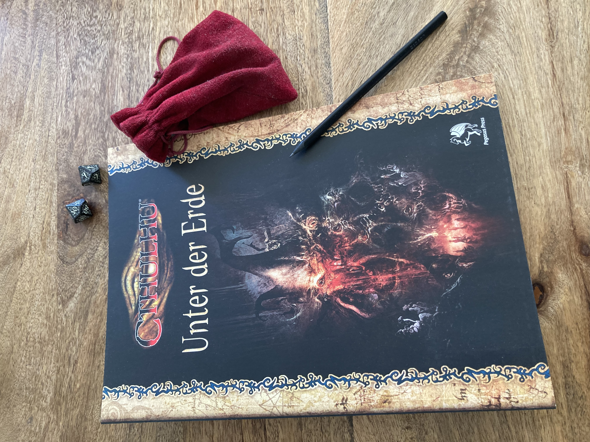
Der Anthologieband spielt, wie der Name schon sagt, an unterirdischen Orten. In meinem Szenario Der Sandmann in Las Vegas geraten die Investigatoren aufgrund ihrer Recherchen mehr oder weniger (eher weniger) freiwillig in die Welt der Sandmenschen unter dem Wüstenboden und müssen deren schreckliches Geheimnis erkennen.
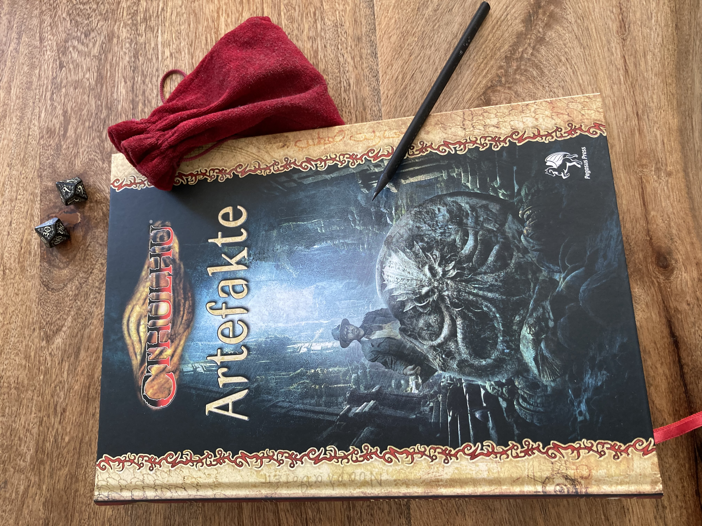
Der Band listet zahlreiche Artefakte des Cthulhu-Mythos auf und beschreibt sie inklusive Regeln dazu. Neben bereits zuvor in anderen Bänden gesetzten Artefakten sowie realen, historischen Artefakten, die um den Cthulhu-Mythos erweitert wurden, gibt es die dritte Kategorie rein fiktiver Artefakte, die aber oft von irdischen Kulturen und Funden beeinflusst wurden. Die Artefakte dieser Kategorie habe ich verfasst.

Ein kleines Szenario als Promo-Heft, das in Friedberg (Hessen) spielt, dem Sitz von Pegasus Spiele. Das in der Wetterau allgegenwärtige Thema "Wasser" wird aufgegriffen und die Kreisstadt um ein dunkles Geheimnis erweitert.

Der Anthologieband befasst sich auf cthuloide Weise mit dem Thema Zeitreisen. Mit Jenseits der Relativität habe ich ein Szenario im Einsteinturm der 1920er Jahre beigesteuert - einem Ort, der real existiert. Tatsächlich unterstützen die Investigatoren in diesem Abenteuer Albert Einstein bei seltsamen Ereignissen, die sich selbst das Genie nicht erklären kann.
"Jenseits der Relativität ist zwar im Grunde linear, trotzdem aber das Highlight des Bandes dank einer tollkühnen Grundidee, gut beschriebenen Horrorszenen und des hervorragend aufgebauten Twists." - Orkenspalter TV
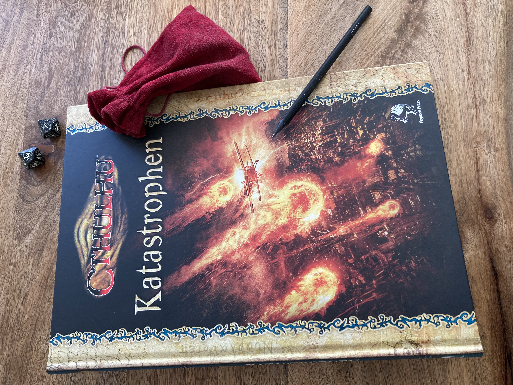
Die Anthologie Katastrophen hat genau diese zum Mittelpunkt. Mit Zuckersüßer Tod habe ich eine dieser Katastrophen beigesteuert. Das Szenario spielt vor einem realen (wenn auch zeitlich flexibler einsetzbaren) Unglück, nämlich der Großen Melasse-Flut in Boston von 1919. Die Investigatoren sind anwesend und müssen vor diesem Hintergrund jemanden finden, der in cthuloide Machenschaften verwickelt ist.
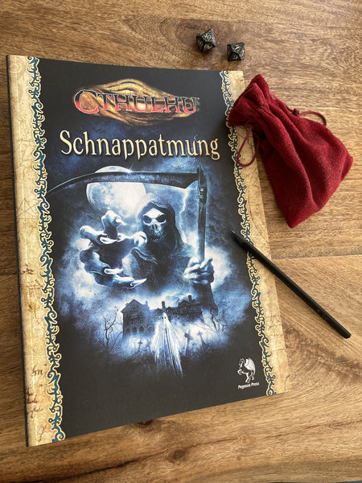
Von den 7-8 Kurzszenarien habe ich mit Die Jagd und Endstation habe ich zwei davon geschrieben.

Der Kampagnenband enthält mehrere Abenteuer, die alle in Frankreich spielen und zu einer Kampagne verbunden werden können. Mit Nasskalte Hors d'Oeuvres und Türen des Teufels habe ich zwei davon beigesteuert und auch sonst bei der Kampagne mitgeplant. Ich selbst mag ganz besonders die Austern-Thematik.
"(Das Abenteuer Nasskalte Hour d'Oeuvre) ist mit seinen Motiven, dem Schreibstil und der vorbildlichen Struktur wirklich herausragend." - Orkenspalter TV
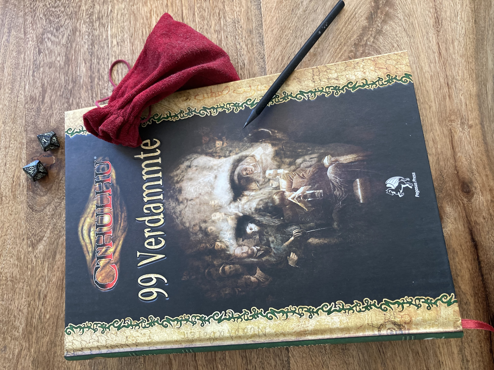
Von den 99 Verdammten in diesem Band, die als vorgefertigte Charaktere zur Verfügung gestellt werden, habe ich genau 16 entworfen und verfasst. Wir haben dabei stark auf ein breites Spektrum geachtet: Geschlecht, soziale Schicht, verschiedene Kulturen usw. sollten möglichst vertreten sein. Die Charaktere sind etwa zu gleichen Teilen primär für den deutsch- und den englischsprachigen Raum entworfen, weil hier die meisten Abenteuer spielen.
"Alphabetisch sortiert, einheitlich gestaltet und auf zwei Seiten zusammengefasst finden sich im Buch 99 spannende Persönlichkeiten, die auf ihren Einsatz warten. Auch Spielleitungen, die auf der Suche nach einem detaillierten NSC-Konzept sind, können hier schnell fündig werden. Die Auswahl an Charakteren ist abwechslungsreich und erfreulich divers aufgestellt, was Geschlechter und mögliche Berufe angeht. Auch gesellschaftlich findet sich für alle Schichten etwas." - Teilzeithelden

Der Band bietet Hintergrundmaterial sowie einen Ladengenerator (von mir erstellt) über eine lose organisierte Kette von Läden und Einrichtungen, die sich auf den Spuren des H.C. Andersen der Unterstützung gegen den Mythos verpflichtet hat. Mit Ein Schatten seiner Selbst habe ich dafür auch ein Abenteuer entworfen, das das Märchen "Der Schatten" von H.C. Andersen aufgreift und das als Kammerspiel in einer kleinen Pension spielt.
"Schatten seiner Selbst ist großartig aufbereitet, sehr gut geschrieben und macht beim Lesen schon Lust aufs Leiten dieses recht offen angelegten KurzAbenteuers. Das Highlight dieses Bandes." - Orkenspalter TV
"Insgesamt ist „Weltgeheimnis“ ein runder Band mit spannenden Ansätzen zur Darstellung einer klassischen Geheimgesellschaft, die sich dem Kampf gegen den kosmischen Schrecken verschrieben hat. [...] Das Motiv der Geheimgesellschaft, die gegen das cthuloide Grauen kämpft, mag zwar abgedroschen sein, findet sich hier aber charmant und abwechslungsreich aufbereitet." - Metal.de
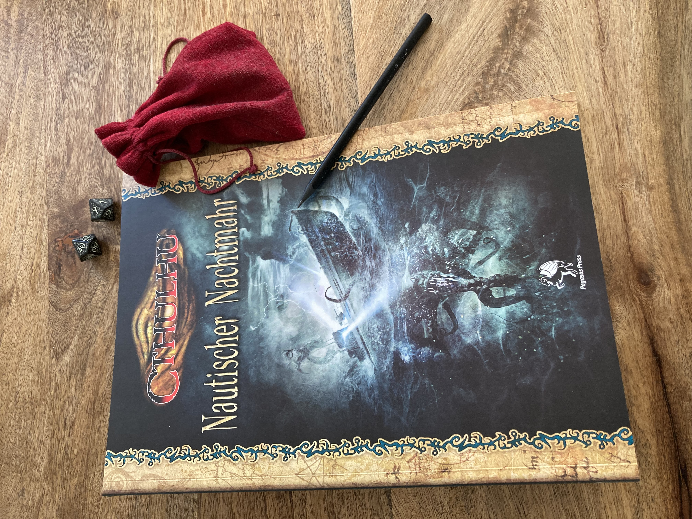
Der Band enthält mehrere Szenarien, bei denen es um Schiffe geht. Mein in der Gegenwart spielendes Abenteuer Menschenfracht folgt dem Schicksal mehrerer Menschen, die - eingesperrt in einen Container - von China in die USA fliehen wollen und dabei in eine noch grausigere Situation an Bord gelangen, als die Besatzung des Containerfrachters plötzlich verschwindet und das Schiff ungesteuert im Pazifik treibt. Dieses Szenario ist wegen seines bitter-realen, harten Themas und der Ausgangssituation sowie der Konflikte der Charaktere untereinander eines der psychologisch heftigeren aus meiner Feder.
Menschenfracht ist ein gnadenloses Szenario und bereits durch seinen Einstieg nichts für zartbesaitete SpielerInnen. Es ist in seinem Verlauf sehr offen gestaltet.[...] Deswegen sei dieses Szenario nur jenen Spielern empfohlen, die mit der Hoffnungslosigkeit an Bord und nicht zuletzt auch den menschlichen Abgründen in ihrer eigenen Gruppe umgehen können." - Teilzeithelden
[..]acht vorgefertigten Charaktere darauf ausgelegt, dass es auch innerhalb der Gruppe zu Reibereien kommen kann, wodurch der Kampf ums Überleben (der sowieso schon sehr fordernd gestaltet ist) garantiert nie langweilig wird." - Nerds gegen Stephan
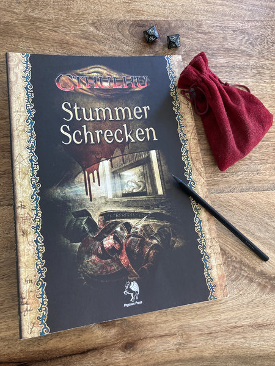
Blende und Abgang ist mein erstes veröffentlichtes Abenteuer für das Cthulhu-Rollenspiel (das ich vorher natürlich schon oft gespielt hatte). Die Investigatoren steigen tief in die Glitzerwelt des Hollywoods der 1920er ein und geraten bei ihren Recherchen in die Abgründe der Traumfabrik, in der Realität und Traum miteinander verschwimmen.
„[...] taucht Blende und Abgang mit vielen originellen Ideen tief in die Hollywoodwelt des Stummfilms. Damit bieten beide Abenteuer empfehlenswerten Horror in der Welt des Cthulhu-Mythos.“ – Mephisto Magazin, Ausgabe 69
„„Stummer Schrecken“ ist ein empfehlenswerter Abenteuerband [...]: Während „Blende und Abgang“ mit einer einfallsreichen Story sowie deren stimmungsvolle – und teilweise surreale – Einbettung in ein tolles Hollywood-Setting punktet [...]. Ein toller Abenteuer-Zweiklang, der in keiner „Cthulhu“-Sammlung fehlen darf.“ – Ringbote
„Mit Stummer Schrecken bekommt der Spielleiter zwei recht unterhaltsame, spannende und liebevoll aufgemachte Abenteuer zu einem ausgesprochenen günstigen Preis.“ – Roter Dorn Medienportal
"Es ist ein gut durchdachtes und gut strukturiertes Abenteuer. [...] es hat einen sehr, sehr coolen Showdown." - Orkenspalter TV
Space: 1889
Das Spiel wurde im Original um 1990 von Frank Chadwick veröffentlicht und stellt die Annahme an, dass viele Theorien über den Äther (heute als Weltraum bekannt) aus dem 19. Jahrhundert tatsächlich zutreffen. Flugschiffe des britischen Empire und anderer Kolonialstaaten können diesen Äther bereisen und den Mond oder Planeten wie Mars, Venus und Merkur dank Dampftechnologie und Sonnenwärme erreichen, ja sogar bis zum Asteroidengürtel vordringen. Nachdem diese faszinierende, Jules-Verneske Setting in den 1990ern wieder auslief, wurde es in den 2010ern vom Uhrwerk Verlag aufgegriffen und mit dem von HEX bekannten Ubiquity-Regelsystem neu und zeitgemäß wiederbelebt. Ich habe schnell Abenteuer beigesteuert und wurde zum Band- und später CO-Chefredakteur des Spiels, so dass zahlreiche Bände auch unter meiner Regie entstanden, bis die Lizenzen um 2018 an einen anderen Verlag vergeben und das Spiel nochmals neu aufgelegt wurde.
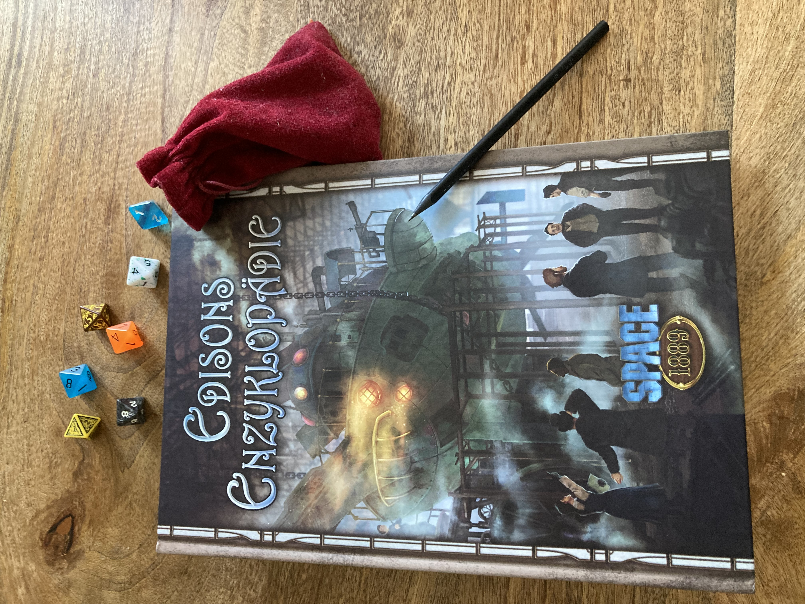
Der Ausrüstungsband für Space: 1889. Eine Reihe von Ausrüstungsstücken stammen von mir
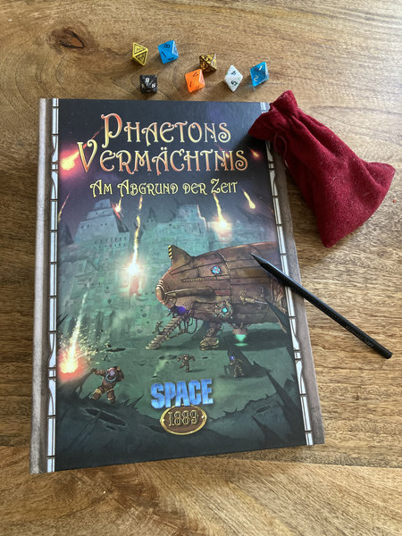
Ausführliches Abenteuer in Kampagnenlänge, in dem die Charaktere in den Asteroidengürtel, nach Indien und an den Südpol gelangen. Er bietet die Gelegenheit, ein Kerngeheimnis bei Space: 1889 zu lüften: das Schicksal des Planeten Phaeton und seiner Bewohner. Geschrieben zusammen mit Stefan Küppers.
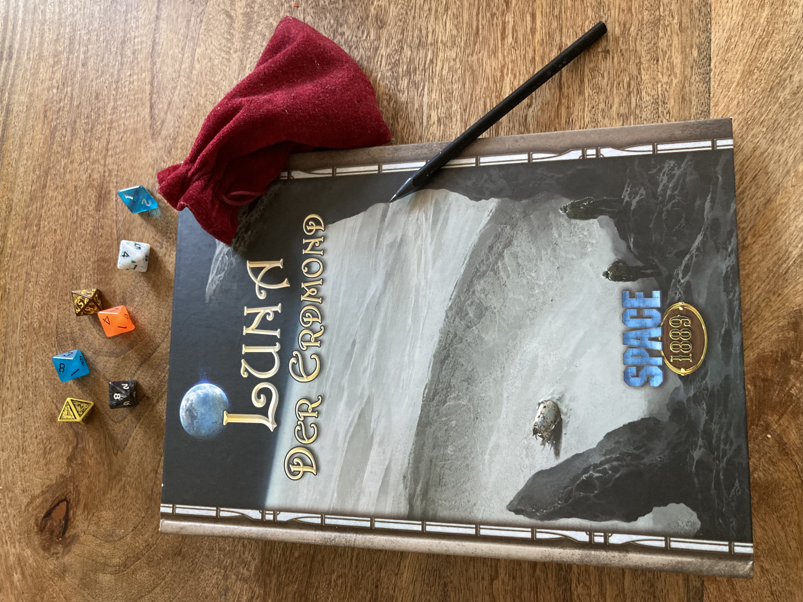
Diese "Planeten"-Spielhilfe für Space: 1889 beschreibt Luna, den Mond der Erde, inklusive seiner Bewohner, der Seleniten und der Mondmenschen. Viele Texte sind von mir und ich habe den Band redaktionell betreut.
"Mit 15 von 20 Sternen schlägt sich der Mondband gut und ist für Space-Liebhaber eine eindeutige Empfehlung."- Drosi
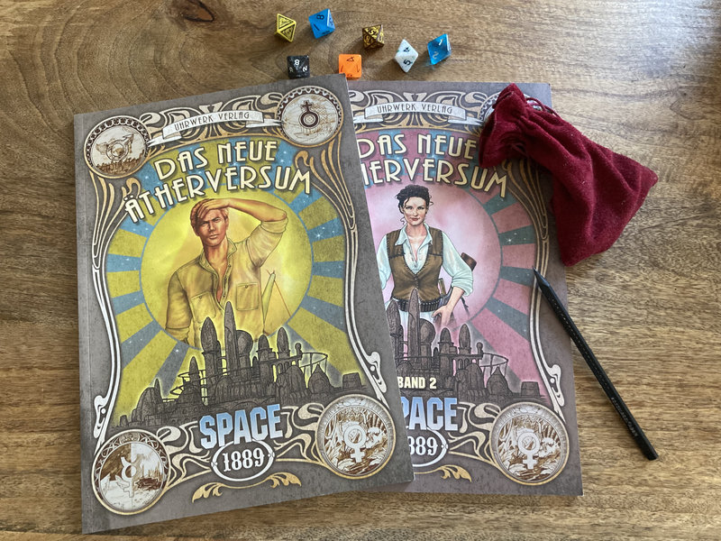
Diese beiden Bände stellen eine Art Ingame-Sammlung verschiedenster Artikel aus der Welt von Space: 1889 dar, jeweils mit Hintergrund- und Regelteil. Einige der Artikel stammen von mir.
"Generell bietet „Das Neue Ätherversum 2“ wieder so viele Anregungen und Inspirationen, dass kreative SpielleiterInnen genug Material für das kommende Jahr haben." - Nerds gegen Stephan (über Band 2)
"„Das Neue Ätherversum“ ist ein hervorragender Quellenband für alle, die mehr in die Spielwelt von „Space: 1889“ eintauchen wollen oder Inspiration und Ideen für eigene Abenteuer suchen." - Ringbote (über Band 1)
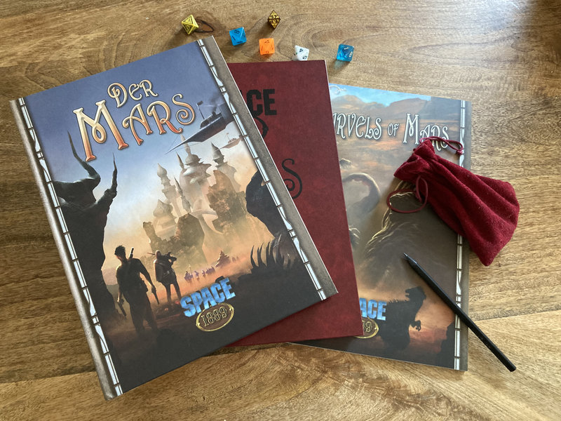
Die umfangreichste Planeten-Spielhilfe von Space: 1889 beschreibt den roten Planeten mit zahlreichen Städten und Kulturen darin. Viele Texte stammen aus meiner Feder und ich habe den Band redaktionell betreut und geplant. Für das internationale Crowdfunding wurde er ins Englische übersetzt und es entstand die zusätzliche Spielhilfe "Marvels of Mars" mit einigen Spezialthemen und einem Bestiarium, für das ich sogar ein Excel-Makro mit Textblock-Ausgabe konstruiert hatte..
"Das Buch schafft es gut, seine Vorbilder nachzuahmen, ohne dabei in altmodische Überlegenheit-Fantasien weißer Menschen zu verfallen.[...] Für Spieler von Space 1889 lohnt der Ausflug auf den roten Planeten damit auf jeden Fall. Mit 15 von 20 Sternen schneidet der Marsband gut ab." - Drosi
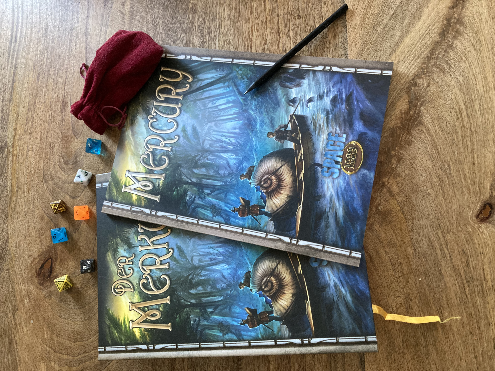
Der sonnennächste Planet Merkur hat im Space: 1889 Universum die Besonderheit, mit einer Seite hin zur Sonne, mit der anderen von ihr weg "eingelockt" zu sein. Entsprechend gibt es eine Kalte und eine heiße Seite sowie einen dünnen Streifen dschungelartigen Landes in der Mitte von nur einigen Kilometern Breite, durch den sich einmal rund um den Planeten der "Weltenfluss" zieht. Viel Texte sowie das Abenteuer im Band stammen von mir, außerdem habe ich ihn gemeinsam mit Uli Lindner redaktionell betreut.
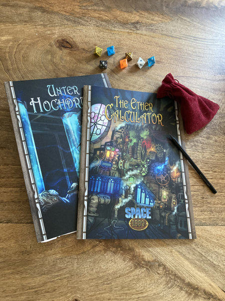
Mein erstes Werk für Space: 1889 ist das Abenteuer Der Aetherkalkulator in der Anthologie Unter Hochdruck. Es besteht aus einer Detektivgeschichte im ersten Teil des Abenteuers, die innerhalb eines Werkes der "Schlesischen Analysemaschinen Produktion" in Breslau stattfindet und viele Begriffe und Themen heutiger IT aufgreift und sie auf die Welt der Steampunkigen Analysemaschinen überträgt (Versionierungssystem per Lochkarten und Rohrpost, um nur eines zu nennen - und der Name der Firma ist auch kein Zufall ;) ). Der zweite Teil führt dann an Bord eines Ätherzeppelins, bei dem man Bugs in den Eingeweiden der kursberechnenden Analysemaschinen an Bord bekämpfen muss, bevor es im Finale zu einem Hindenburg-artigen Absturz über den USA kommt. Für das internationale Crowdfunding wurde es später ins Englische übersetzt.
Sonstige
Neben obigen Hauptlinien habe ich immer wieder auch links und rechts für kleine Verlage oder kleine Projekte größerer Verlage sowie im Indie-Bereich Projekte umgesetzt und Texte beigesteuert. Gerade im Erzählspielbereich mit FATE und pbtA, aber auch an mehreren der erfolgreichen Free League Spielen, die ins Deutsche übersetzt und mit originär deutschem Content erweitert wurden, habe ich mitgearbeitet.
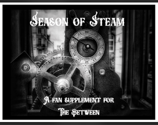
Die Indie Rollenspiel Community The Gauntlet hat eine Reihe toller Erzählrollenspiele entworfen, die meist aus der Community (mit oft Jason Cordova als Brain dahinter) kommen, in ihr als Online-PDF wachsen und verbessert werden und schließlich oft als Produkt über ein Crowdfunding auf dem Markt landen. Brindlewood Bay ist neben Trophy eines davon und etablierte das Carved from Brindlewood System, das wiederum auf Powered by the Apocalypse (pbtA) basiert. Eines dieser Carved from Brindlewood Spiele ist gleichzeitig auch eines meiner Lieblings-Erzählspiele: The Between, das sehr nah an der Serie Penny Dreadful und anderen viktorianischen Horrormotiven verortet ist. Und weil ich es so mag und die Szenarien, die hier im Kampagnenspiel in Seasons mit jeweils einem Mastermind als übergreifender Bedrohung eingebettet werden können, habe ich zwei solcher Seasons mit jeweils mehreren Szenarien (Threats) selbst entworfen. Dank der offenen Lizenz, die pbtA bietet, habe ich sie als Produkt auf itch.io veröffentlicht.
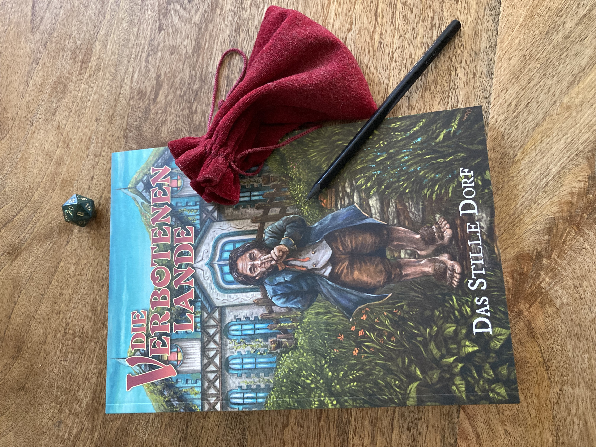
Als der Uhrwerk-Verlag das Free League Spiel xDie Verbotenen Lande (Forbidden Lands) übersetzt hat, wurde dazu auch ein eigener Band mit Abenteurschauplätzen entworfen. Einen dieser Schauplätze, die man im Spiel flexibel auf einer Karte als SL positionieren kann, habe ich geschrieben. Es geht um zwei rivalisierende Zauberkundige, die sich dies- und jenseits eines Grabens fast Auge an Auge gegenüber stehen und sich spinnefeind sind.
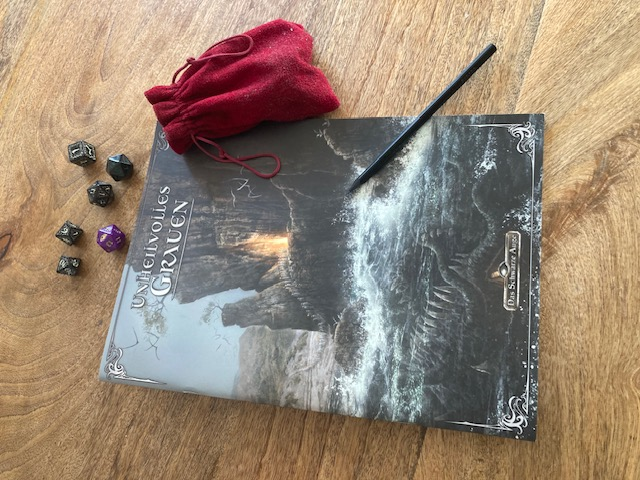
Als Ulisses Sandy Petersons Cthulhu ins Deutsche übersetzte und von D&D Regeln auf DSA übertrug, wurde auch ein eigener Abenteuerband Unheilvolles Grauengeschrieben, zu dem ich das Abenteuer Das Fieber, das über Selem kam, im Stile eines Cthulhu-Abenteuers, beisteuerte.
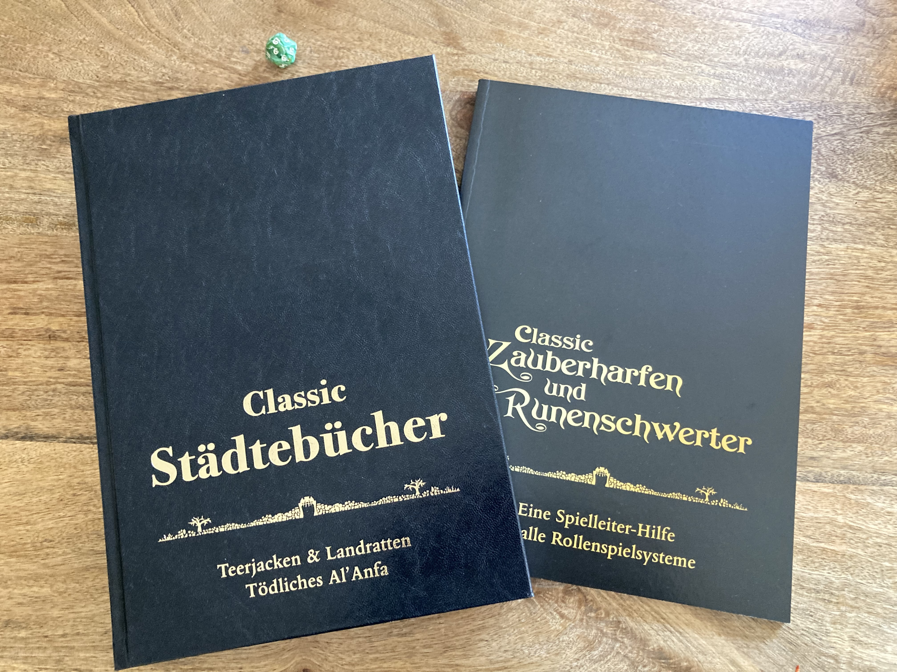
In der Frühzeit von DSA gab es einige wenige Produkte inoffiziellen Inhalts, die von Drittanbietern erstellt wurde, so beispielsweise mit Tödliches Al'Anfa eine Stadtbeschreibung Al'Anfas, noch bevor die erste Box sich dieser Region und der Stadt annahm. Die Classic Bände greifen eine Reihe dieser Produkte auf und transferieren ihren Inhalt in das aktuelle DSA 5 Regelwerk und passen sie auch im Inhalt und Stil an aktuelle Rollenspielprodukte an. Ich habe einige Texte davon überarbeitet.
"Zauberharfen und Runenschwerter ist ein interessanter Band aus früheren Zeiten des Rollenspiels, der durchaus lohnende Artefakte vorstellt." - Engors Dereblick
"Seinerzeit fand ich TEERJACKEN UND LANDRATTEN sehr inspirierend, und auch heutzutage kann dieser Band dem geneigten Spielleiter ein paar schöne Ideen und ein paar prima verwendbare Pläne liefern." - Lesermeinung
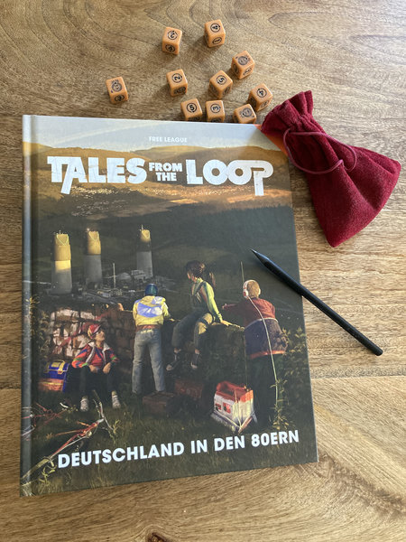
Das Rollenspiel zu Tales from the Loop, das auf dem gleichnamigen Illustratiersten Roman von Simon Stalenhag basiert, bietet starken Stranger Things Flair. Man spielt Kinder in den 1980ern und erlebt mysteriöse Dinge. Free League hat eine schöne Instanz seines bekannten Regelsystems abgeliefert, die mir für dieses Setting gut gefällt. Als Ulisses das Spiel ins Deutsche übersetzen wollte und zusätzlich einen eigenen Deutschland-Band herausbrachte, wollte ich unbedingt mitschreiben und habe mich mit dem Szenario Im Bann der Bärchis eingebracht.
"Ulisses beschreibt in einem gut gestalteten Quellenband das geteilte Deutschland. Ein Deutschland mit solidem Wohlstand, voller Widersprüche und Misstrauen – sowohl von und zu anderen als auch untereinander. [...] Die spannende Kampagne ist umfangreich, orientiert sich gut am bisher vorhandenen Material und lässt jene nostalgisch zurückblicken, denen die 80er noch in Erinnerung sind." - Teilzeithelden
"Besonders gut gefallen hat mir gefallen das die BRD und auch DDR der 80er gut umrissen werden und so ein gutes Bild von Deutschland in den 80er umreißt und die spezielle Situation des Landes aufzeigt. [...] Alles in allem ein tolles setting und Kampagnen Buch für alle deutschsprachigen Spieler die Interesse haben ihr Spiel in die BRD oder DDR zu verlegen." - Lesermeinung
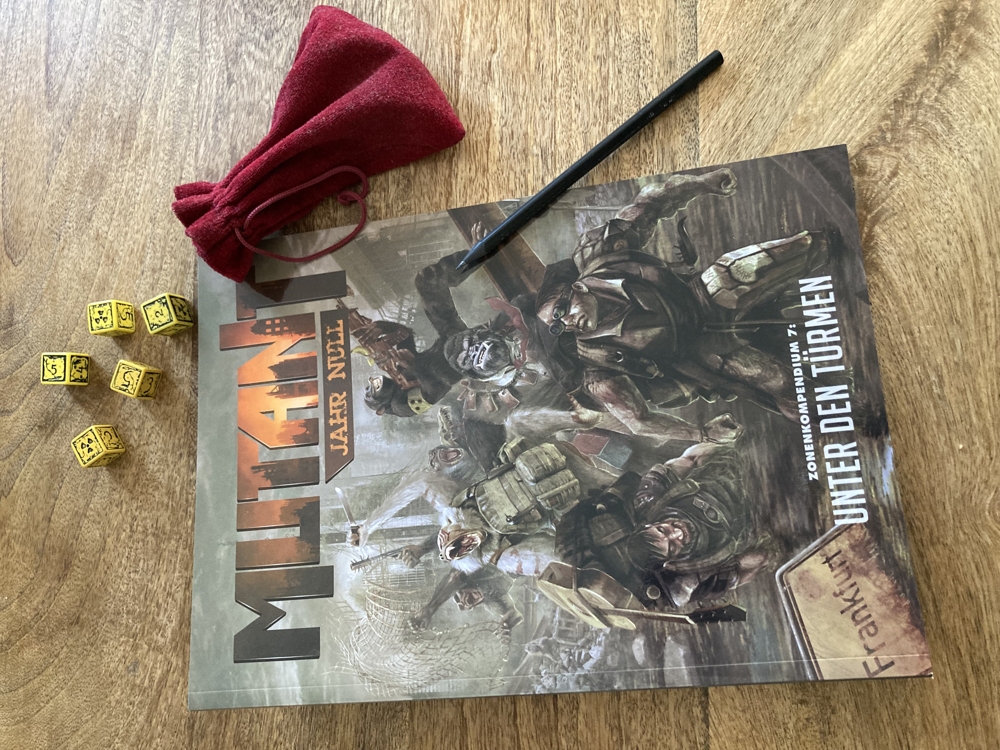
In meinen Augen eine kleine, versteckte Perle unter den Veröffentlichungen aus meiner Feder. Der gesamte Band ist von mir verfasst und behandelt meine Heimatregion und Stadt Frankfurt in der Postapokalypse von Mutant: Jahr Null. Als Zonenkompendium+ bietet es eine eigene Zone, die man im MJ0 SPiel erkunden kann, voller realer Orte in Frankfurt, die in die Apokalypse weitergedacht wurden. Ich mag diesen Band selbst sehr gerne.
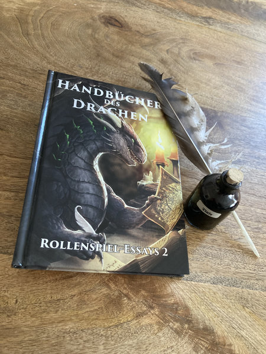
Zu diesem Band mit Rollenspiel-Essays habe ich zwei (über One Shots und über Inspirationen) beigesteuert.
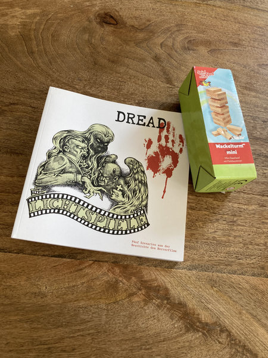
Dread - "Das mit dem Jenga-Turm" - ist ein Horror-Rollenspiel für One Shots, dessen Alleinstellungsmerkmal es ist, dass ein Jenga-Turm verwendet wird, bei dessen Einsturz alles vor die Hunde geht. Die Anthologie Lichtspiele enthält fünf Abenteuer aus 5 Epochen des Gruselfilms. Mit Fleisch habe ich einen Beitrag für das "Atomic Age" der 50er/60er beigesteuert, ganz im Stile von Filmen wie "Invasion aus dem All" oder "Der Blob".
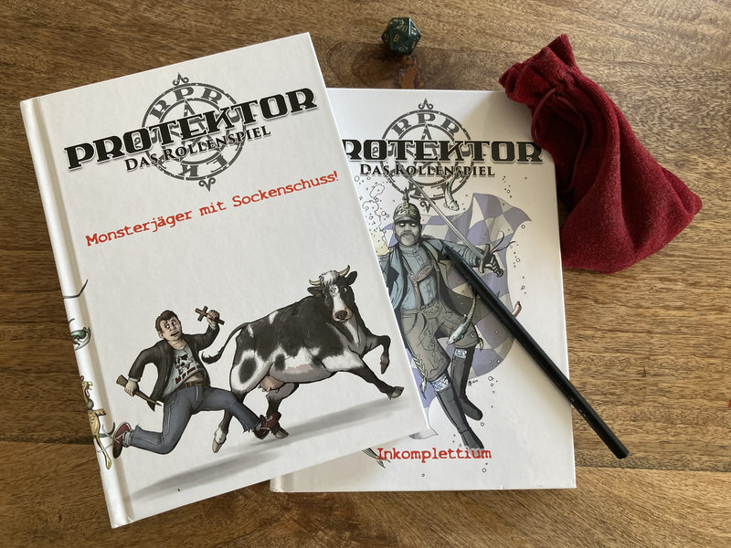
Hinter diesem Rollenspiel verbirgt sich eine leider sehr traurige Geschichte. Der langjährige Kreative und Spieleschaffende André Wiesler, der mich gewissermaßen entdeckt hat (meine ersten Print-Veröffentlichungen - noch vor DSA bei Ulisses - waren in seinem Magazin Envoyer) und mit dem ich bei der Arbeit an der Uthuria-Kampagne zu tun hatte, hatte den durch Crowdfunding finanzierten, humorvollen Roman Protektor geschrieben. Später hatte er daraus mit einem Team aus Autorinnen und Autoren ein Rollenspiel gemacht. Noch während der Arbeit dafür aber verstarb er aber sehr plötzlich und viel zu jung - und hinterließ meines Wissens nach Frau und Kind. Das Autorenteam hat die Protektor-Bände noch vollendet oder vielmehr: nicht vollendet. Der als Komplettium geplante Zusatzband erinnert als Inkomplettium an Andrés Fehlen. Das Spiel selbst ist schräg, humorvoll und voller absurder Ideen - so wie ich André Wiesler kennengelernt habe.
"Protektor ist ein Rollenspiel, in dem Humor und Spaß im Vordergrund stehen und in dem Regelfanatiker nichts verloren haben. Und das ist sehr gut so." - Spielermeinung
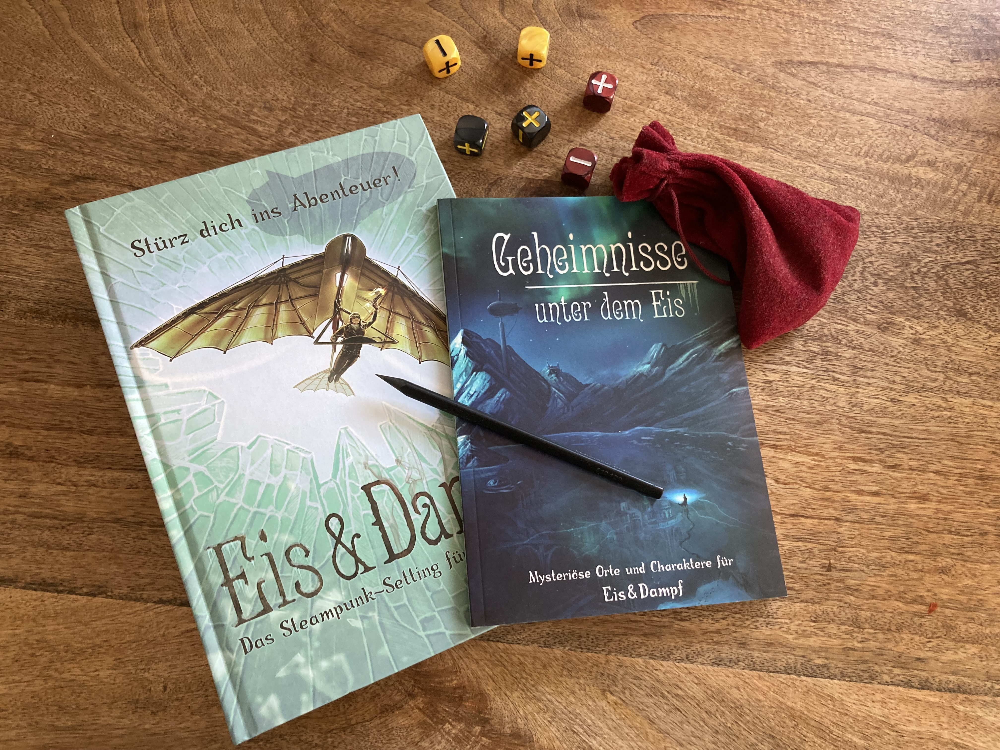
Das Ehepaar Vogt hat gemeinsam mehrere Romane geschrieben, ebenso wie Beiträge zu verschiedenen Rollenspielen. Ihre Eis & Dampf Romanreihe spielt in einem alternativen Europa des 19. des Dampfzeitalters, das unter Eis liegt und in dem sich ganz andere Technologien und Mächte entwickelt haben. Luftschiffe und firesische Luftpiraten, eine immer noch mächtige Republik Venedig, ein niemals entdecktes Amerika (erst im Rahmen der Romane geschieht da eingies). Als Rollenspieler*Innen haben sich auch ein FATE-Setting für ihre Hintergrundwelt geschrieben. Ich habe eingie Texte zu Italien sowie ein dort spielendes Abenteuer beigesteuert, ebenso einige Mysterien für einen auf den Hauptband folgenden Mysterienband.